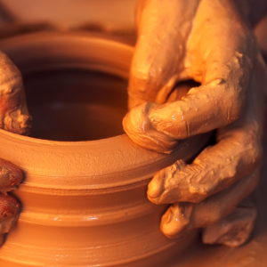
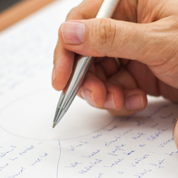
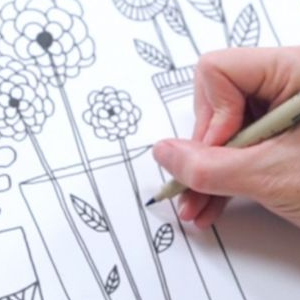
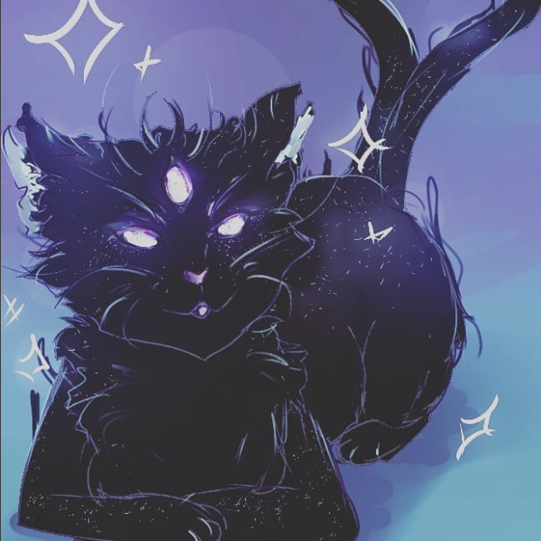
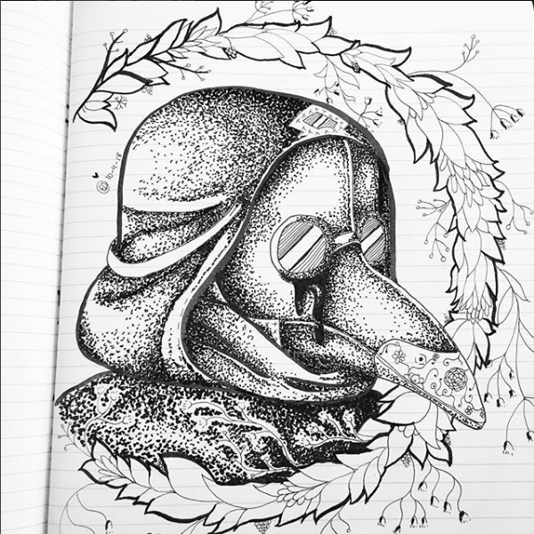
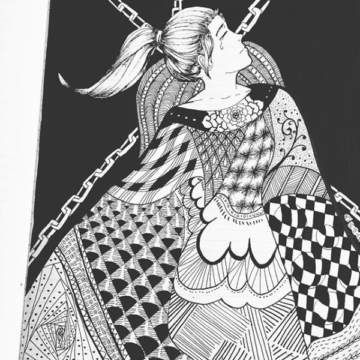

Overview
To start off with, my favorite thing is the creative arts. What part of the arts? All of them! Performing arts, artistic arts... all of it combined. This website will be dedicated to covering specific aspects of the arts that personlly have a hand in my life, and include the following:
- Writing
- Drawing
- Violin
- Singing
- Theatre
Writing

Writing has been a huge part of my life for as long as I can remember. From about the time I was in kindergarten, I have always had a love for writing stories. This is a passion that has followed me throughout the years, and even continues today. Since I have had access to the internet I have fallen into roleplaying. The type of roleplaying I typically do involve tossing novel-esque paragraphs back and forth between me and another person or multiple people, and it has led me to meet many of the friends that I have today.
Drawing

Much like writing, I have been drawing and painting and generally crafting since I was a little girl. Before I was even in school, I had some type of creative medium in my hand. Be it painting, crayons, markers, colored pencils... I was doing it and I relished in it. Today I still draw, but not as much. Even if I do, they are the corner-of-the-paper doodles that teachers tend to not be so fond of.
Down below are drawings by some of my good friends and some of my favorite artists from 2018's #inktober challenge, and these are the types of drawings I go to most for inspiration! This inspiration can be used for... just about anything. It just gets the ideas flowing in my mind.
|  |  |  |